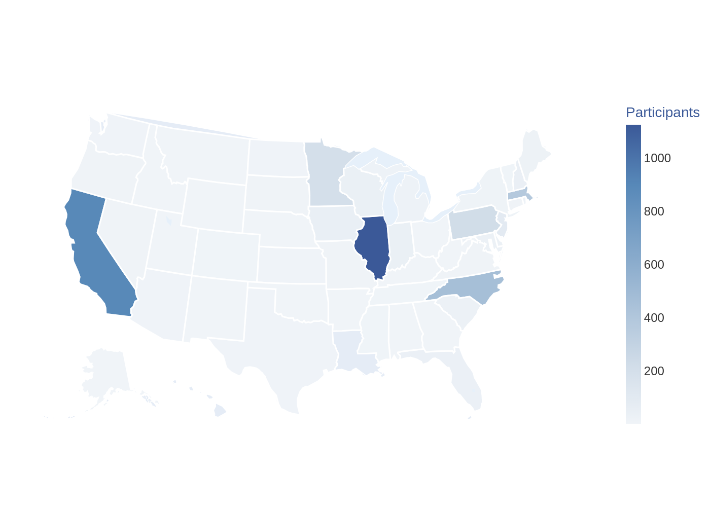

Our participants
Meet the HeartShare community.
More than 6,000 people across the country are helping us learn about heart failure. Here is a look at who they are and what they have done so far.
Figures as of November 2026
A growing community
We started with 24 people in July 2023. Today, more than 6,000 people take part.
HeartShare Registry
Total people enrolled
Deep Phenotyping Cohort
Total people enrolled
Draft: these chart points are estimates read from the current website chart. They will be replaced with exact totals.
Show the numbers
| Date | Registry | Deep Phenotyping |
|---|
Who takes part
Heart failure affects people in every part of the country and from all walks of life. For our research to help everyone, we want HeartShare to include people from all walks of life too.
At a glance
Race
Where participants live

Other health conditions
Many people in HeartShare also live with other health conditions. These are the most common ones.
Many people have more than one condition, so these numbers add up to more than 100%.
What we have done together
Every survey, visit, and sample helps us learn more about heart failure.
That adds up to more than 6 years of time.
These help us track health over time.
779 first visits and 282 follow-up visits.
Optional tissue samples provided by participants who chose this procedure.
Be part of the story.
Anyone age 30 or older can join, with or without heart failure.